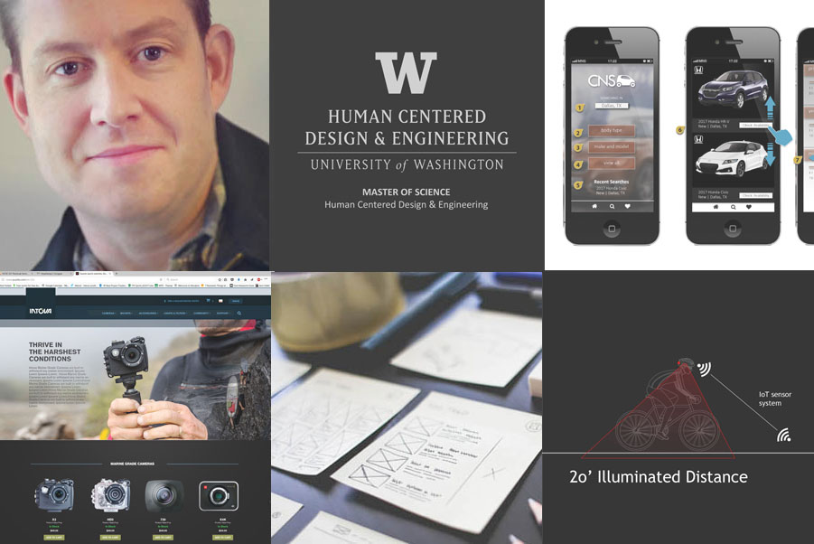

Assignment 1

I am employed at BECU as a Senior UX designer. I help create products that are useful to our members.
Skill sets
Hello! As a practitioner of user experience design, or UX, my sole objective is to design products and processes that are useful, offer a great experience and meet the needs of those who use the systems I design. I have experience in Visual Design, Product Development and User Experience.
Assignment 1
The assigment is to create a name plate
UX Development Process
Research question: Who is the user of the name plate?
- NOT myself, I already know who I am
- NOT friends or family, they know who I am
- Observation of Jami's environment: Fellow workers who have heard of Jami but do not know him personally are most likely the target user
Reserch question: What context will the name plate be used?
- NOT in my home, I don't need to find myself
- Observation: Likely in my place of work, where it is common for co-workers to know the name of a co-worker but do not know where they sit in the building or what they look like
Problem statement
- Co-workers need a way to find Jami Odell in a large business complex because they want to give him information or ask him a question in person.
"how Might We statement"
- HMW help fellow co-workers easily and quickly locate Jami Odell so they can ask him a question of give him information?
Hypothosis
- We believe that a Name Plate will help fellow co-workers quickly and easily locate me inside of a large office building so they can provide me with important information or ask me a question.
Research
- Conducted contextual interviews with fellow co-workers to discover what they are intending to do when seeking me out for person to person interactions.
- Did competitive analysis of name plate market
Findings
When searching for Jami Odell inside of the corporate office, users:- Need to know where Jami's desk is
- Are very busy with limited time
- Only know Jami by name and skillset, but not by appearance
- Search for Jami by navigating to the general vacinity of the business complex
- Quickly walk up and down isles, scanning for the desk of Jami by his name plate
- Want to deliver important information in person
- Want to ask Jami a question in Person in person
- Know when Jami will be back
- Leave Jami a Message
- Know a bit more about what Jami does
- Have a way to contact Jami in the future
- Easily remember where he sits
Design approach
Create and artifact that meets user needs that includes the following features, in order of value to user:- Easy to spot,legible nameso users can quickly locate Jami's desk
- Message system so users can leave Jami a message if he is
- Return time system so users know when Jami will return
- Business Card so users know how more about what Jami does and how to contact him